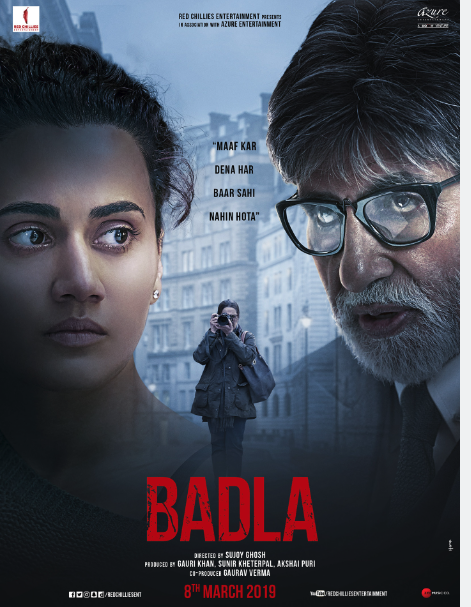

This a really beautiful Romantic film. This is an American film and is directed by Nick Cassavetes, casting Ryan gosling and Rachel McAdams as main charcters. They did a fabulous job at playing the Character well. I have watched this film over few times and cannot recommand it enough.

This is another beautiful Indian film featuring actor Ranbir Singh and Actress Alia Butt as the main characters. Excellent performance by both of them.Totally loved it!
Gully Boy is a Indian Hindi-language musical drama film directed by Zoya Akhtar, and written by Akhtar and Reema Kagt.The movie is
Inspired by the lives of Indian street rappers DIVINE and Naezy
The film is a coming-of-age story about aspiring street rapper Murad Ahmed (Singh).Murad's parents have worked to get him educated so he can find a white-collar job. Instead, he finds a love for hip-hop and comes of age while using his music to highlight inequalities.
Another beautfiul south korean Oscar winner flim. Watched it few times with my Family. Totally worth it.
Parasite is South Korean thriller film directed by Bong Joon-ho. The film, starring Song Kang-ho, Lee Sun-kyun, Cho Yeo-jeong, Choi Woo-shik, Park So-dam, Jang Hye-jin, Park Myung-hoon and Lee Jung-eun, follows a poor family who scheme to become employed by a wealthy family, infiltrating their household by posing as unrelated, highly qualified individuals.
One of the best film of all time! Really Loved Leonardo DiCaprio's acting.Often wondered how he didn't get awarded OSCAR for best actor for this movie.
Shutter Island is a movie about Leonardo DiCaprio's character Teddy, introduced as a US Marshal assigned to investigate the eponymous Shutter Island, a mental sanatorium in the 1950s. He investigates the island, believing that the man who killed his wife.
This is a Indian Hindi-language mystery thriller film directed by Sujoy Ghosh and starring Amitabh Bachchan, Taapsee Pannu. Again Amazing acting by both the co-actors. Watched it few times still love to this date.
A dynamic young entrepreneur finds herself locked in a hotel room with the corpse of her dead lover. She hires a prestigious lawyer to defend her and they work together to figure out what actually happened.
